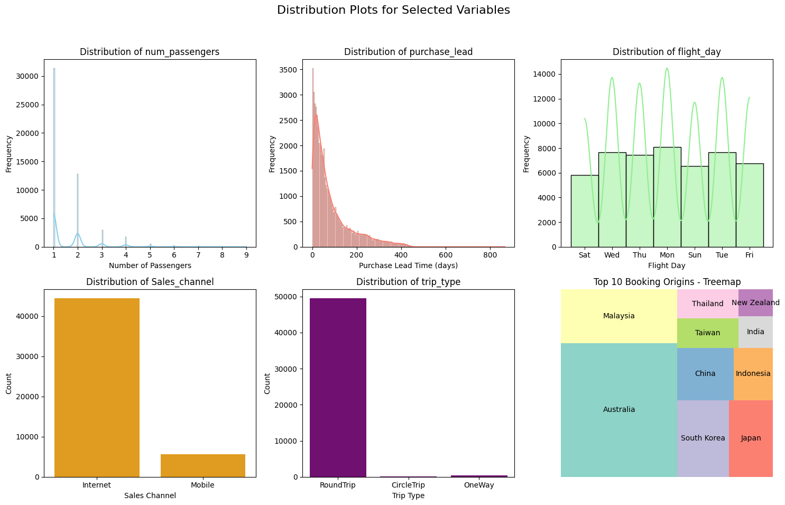

# import project libraries
import pandas as pd
import numpy as np # for linear algebra
import math # for math operations
import seaborn as sns # for plotting
# handling files
import os
import sys
# visualisation libraries
import seaborn as sns
import matplotlib.pyplot as plt
import matplotlib.pyplot as plt # for plotting
import squarify # for tree mapsHow Predictive Models Help British Airways Acquire Customers
Author: Simontagbor
Last updated: 2024-01-16


This project is about combating the problem of unstable buying cycle of British Airways customers using the power of predictive modeling. The project was done as part of a job simulation as a Junior Data Scientist at British Airways. In this Interactive Notebook I will show you the steps I took to build a predictive model that will help British Airways acquire customers. The project is divided into 4 parts: 1. Exploratory Data Analysis 2. Data Cleaning and Preparation 3. Feature Engineering 4. Modeling and Evaluation The source code for this project can be found at my github page.You can also find the Jupyter notebook and the dataset on my kaggle page.
Project Overview
For this project I completed the following tasks:
- Performed Exploratory Data Analysis.
- Cleaned and Prepared the data for modeling.
- Performed Feature Engineering.
- Built and Evaluated models.
- Test the model on unseen data.
- Interpret the model results and make predictions.
Project Dependencies
Exploratory Data Analysis
To understand the data, I performed exploratory data analysis. I used the following techniques to understand the data:
- Visual inspection of data.
- Exploratory Data Visualizations.(Univariate, Bivariate and Multivariate analysis)
Visual Inspection of Data
df = pd.read_csv("predictive_model_data/customer_booking.csv", encoding="ISO-8859-1")
df.head()| num_passengers | sales_channel | trip_type | purchase_lead | length_of_stay | flight_hour | flight_day | route | booking_origin | wants_extra_baggage | wants_preferred_seat | wants_in_flight_meals | flight_duration | booking_complete | |
|---|---|---|---|---|---|---|---|---|---|---|---|---|---|---|
| 0 | 2 | Internet | RoundTrip | 262 | 19 | 7 | Sat | AKLDEL | New Zealand | 1 | 0 | 0 | 5.52 | 0 |
| 1 | 1 | Internet | RoundTrip | 112 | 20 | 3 | Sat | AKLDEL | New Zealand | 0 | 0 | 0 | 5.52 | 0 |
| 2 | 2 | Internet | RoundTrip | 243 | 22 | 17 | Wed | AKLDEL | India | 1 | 1 | 0 | 5.52 | 0 |
| 3 | 1 | Internet | RoundTrip | 96 | 31 | 4 | Sat | AKLDEL | New Zealand | 0 | 0 | 1 | 5.52 | 0 |
| 4 | 2 | Internet | RoundTrip | 68 | 22 | 15 | Wed | AKLDEL | India | 1 | 0 | 1 | 5.52 | 0 |
The dataframe object has a .head() method that allows us to view a specified number of rows in the dataset. This method came in handy for visual inspection of the dataset and to get a feel of the data.
# retrieve a summarised info about the columns
df.info()<class 'pandas.core.frame.DataFrame'>
RangeIndex: 50000 entries, 0 to 49999
Data columns (total 14 columns):
# Column Non-Null Count Dtype
--- ------ -------------- -----
0 num_passengers 50000 non-null int64
1 sales_channel 50000 non-null object
2 trip_type 50000 non-null object
3 purchase_lead 50000 non-null int64
4 length_of_stay 50000 non-null int64
5 flight_hour 50000 non-null int64
6 flight_day 50000 non-null object
7 route 50000 non-null object
8 booking_origin 50000 non-null object
9 wants_extra_baggage 50000 non-null int64
10 wants_preferred_seat 50000 non-null int64
11 wants_in_flight_meals 50000 non-null int64
12 flight_duration 50000 non-null float64
13 booking_complete 50000 non-null int64
dtypes: float64(1), int64(8), object(5)
memory usage: 5.3+ MB- 14 unique columns
- 5000 rows
- Zero null values (which is good!)
- Three unique data types (int64, float64 and object)
Click to expand!
-
num_passengers= the number of passengers associated with a particular flight booking. -
sales_channel= indicates the channel through which the flight booking was made. -
trip_type= indicates the trip Type (Round Trip, One Way, Circle Trip) -
purchase_lead= the number of days between travel date and booking date -
length_of_stay= the number of days spent at destination -
flight_hour= represents the scheduled departure or arrival time of the flight -
flight_day= day of week of flight departure -
route= origin -> represents the destination flight route -
booking_origin= shows the country from where booking was made -
wants_extra_baggage= indicates if the customer wanted extra baggage in the booking -
wants_preferred_seat= indicates if the customer wanted a preferred seat in the booking -
wants_in_flight_meals= if the customer wanted in-flight meals in the booking -
flight_duration= shows the total duration of flight (in hours) -
booking_complete= indicates if the customer completed the booking
Considering the unique data types, I decided to perform label encoding to convert the categorical variables to numerical variables. converting categorical variables to numerical representations will allow me to use machine learning algorithms effectively.
In our case the ideal candidate for label encoding is: flight_day. this is because it is currently a nominal variable with no order or hierarchy.
df["flight_day"].unique()array(['Sat', 'Wed', 'Thu', 'Mon', 'Sun', 'Tue', 'Fri'], dtype=object)As can be seen the current days of the week have no order or hierarchy.
To encode this variable I will map the days of the week to the following numerical representations:
mapping = {
"Mon": 1,
"Tue": 2,
"Wed": 3,
"Thu": 4,
"Fri": 5,
"Sat": 6,
"Sun": 7,
}
# set the new values
df["flight_day"] = df["flight_day"].map(mapping)df["flight_day"].unique()array([6, 3, 4, 1, 7, 2, 5])As can be seen the fligt_days column has been successfully encoded.
Summary Statistics
df.describe()| num_passengers | purchase_lead | length_of_stay | flight_hour | flight_day | wants_extra_baggage | wants_preferred_seat | wants_in_flight_meals | flight_duration | booking_complete | |
|---|---|---|---|---|---|---|---|---|---|---|
| count | 50000.000000 | 50000.000000 | 50000.00000 | 50000.00000 | 50000.000000 | 50000.000000 | 50000.000000 | 50000.000000 | 50000.000000 | 50000.000000 |
| mean | 1.591240 | 84.940480 | 23.04456 | 9.06634 | 3.814420 | 0.668780 | 0.296960 | 0.427140 | 7.277561 | 0.149560 |
| std | 1.020165 | 90.451378 | 33.88767 | 5.41266 | 1.992792 | 0.470657 | 0.456923 | 0.494668 | 1.496863 | 0.356643 |
| min | 1.000000 | 0.000000 | 0.00000 | 0.00000 | 1.000000 | 0.000000 | 0.000000 | 0.000000 | 4.670000 | 0.000000 |
| 25% | 1.000000 | 21.000000 | 5.00000 | 5.00000 | 2.000000 | 0.000000 | 0.000000 | 0.000000 | 5.620000 | 0.000000 |
| 50% | 1.000000 | 51.000000 | 17.00000 | 9.00000 | 4.000000 | 1.000000 | 0.000000 | 0.000000 | 7.570000 | 0.000000 |
| 75% | 2.000000 | 115.000000 | 28.00000 | 13.00000 | 5.000000 | 1.000000 | 1.000000 | 1.000000 | 8.830000 | 0.000000 |
| max | 9.000000 | 867.000000 | 778.00000 | 23.00000 | 7.000000 | 1.000000 | 1.000000 | 1.000000 | 9.500000 | 1.000000 |
Some Highlights from The summary statistics
The majority of bookings involve a small
number of passengers, with 75% of the bookings having either 1 or 2 passengers. However, there are cases with up to 9 passengers.The average
purchase leadtime is approximately 85 days, indicating that customers typically book flights well in advance of their travel dates. Inferring from the significant difference between the mean and the median(50th percentile) the distribution is positively-skewed. The predictive model will be trained withRandom ForestAlgorithm so it is important to note that this algorithm is not sensitive to outliers.It’s also interesting to point out that the average
length of stayis approximately 23 days, indicating that customers typically stay at their destination for a short period of time. However, the maximum length of stay is 778 days, suggesting some outliers or potentially long-term bookings.
Checking for Missing Values
### Check for Nmissing values
df.isnull().sum()num_passengers 0
sales_channel 0
trip_type 0
purchase_lead 0
length_of_stay 0
flight_hour 0
flight_day 0
route 0
booking_origin 0
wants_extra_baggage 0
wants_preferred_seat 0
wants_in_flight_meals 0
flight_duration 0
booking_complete 0
dtype: int64Exploratory Visualizations of the data
I perfomed further exploratory data analysis using visualizations. I used the following techniques to understand the data:
- Univariate Analysis
- Bivariate Analysis
- Multivariate Analysis
Univariate analysis
My goal for this initial step was to understand the distribution of each variable in the dataset. I used the following techniques to understand the distribution:
- distribution plots
hopefully, patterns and outliers would emerge from this analysis that would help me understand the data better.
num_passengerspurchase_leadflight_daySales_channeltrip_type
I examined the above selected variables in the dataset using distribution plots. The plots below show the distribution of the following variables:
# Convert numeric weekday to corresponding day names
weekday_mapping = {1: 'Mon', 2: 'Tue', 3: 'Wed', 4: 'Thu', 5: 'Fri', 6: 'Sat', 7: 'Sun'}
df['flight_day'] = df['flight_day'].map(weekday_mapping)
# Set up the grid layout
fig, axes = plt.subplots(nrows=2, ncols=3, figsize=(15, 10))
fig.suptitle('Distribution Plots for Selected Variables', fontsize=16)
# Plotting num_passengers
sns.histplot(data=df, x='num_passengers', kde=True, color='skyblue', ax=axes[0, 0])
axes[0, 0].set_title('Distribution of num_passengers')
axes[0, 0].set_xlabel('Number of Passengers')
axes[0, 0].set_ylabel('Frequency')
# Plotting purchase_lead
sns.histplot(data=df, x='purchase_lead', kde=True, color='salmon', ax=axes[0, 1])
axes[0, 1].set_title('Distribution of purchase_lead')
axes[0, 1].set_xlabel('Purchase Lead Time (days)')
axes[0, 1].set_ylabel('Frequency')
# Plotting flight_day with day labels
sns.histplot(data=df, x='flight_day', kde=True, color='lightgreen', ax=axes[0, 2])
axes[0, 2].set_title('Distribution of flight_day')
axes[0, 2].set_xlabel('Flight Day')
axes[0, 2].set_ylabel('Frequency')
# Plotting Sales_channel
sns.countplot(data=df, x='sales_channel', color='orange', ax=axes[1, 0])
axes[1, 0].set_title('Distribution of Sales_channel')
axes[1, 0].set_xlabel('Sales Channel')
axes[1, 0].set_ylabel('Count')
# Plotting trip_type
sns.countplot(data=df, x='trip_type', color='purple', ax=axes[1, 1])
axes[1, 1].set_title('Distribution of trip_type')
axes[1, 1].set_xlabel('Trip Type')
axes[1, 1].set_ylabel('Count')
# Adding the treemap for booking_origin (top 10 countries only)
top_10_origin_counts = df['booking_origin'].value_counts().nlargest(10)
axes[1, 2].axis('off') # Turn off axis for treemap
squarify.plot(sizes=top_10_origin_counts, label=top_10_origin_counts.index, color=sns.color_palette("Set3"), ax=axes[1, 2])
# Adding title to the treemap
axes[1, 2].set_title('Top 10 Booking Origins - Treemap')
# Adjust layout
plt.tight_layout(rect=[0, 0.03, 1, 0.95])
# Show the plots
plt.show()
Checkpoint. Check back later for more updates.
last updated: 2024-01-16